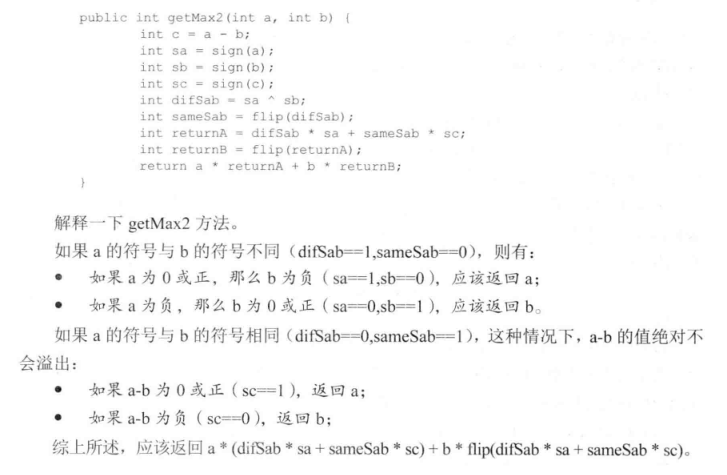
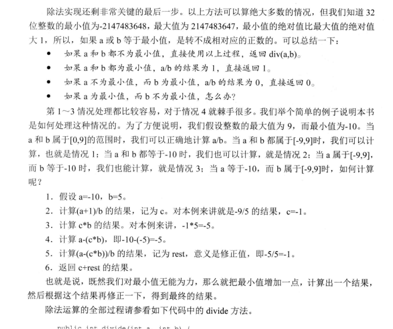
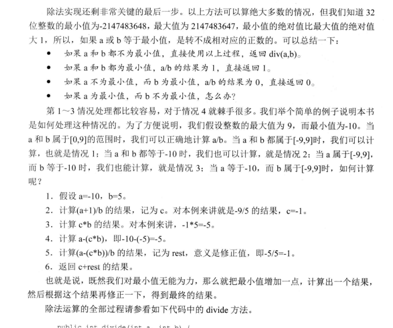

位运算¶
每种编程语言中都会有相关的位运算操作符，实现二进制的按位运算。 位运算有四种：与(&)，或(|)，非(~),异或(^) 熟悉每种位运算的特点，是做与位运算有关的题目的基础。
1. 基础知识¶
1.1 与(&)¶
0&0=0; 0&1=0; 1&0=0; 1&1=1;- 仔细观察上面的操作，发现与操作的结果与二进制加法的进位规则非常一致。
0+0=0 ; 0+1=0; 1+0=0; 1+1 = 1;(此处等号后面的数字表示应该的进位) n = n&(n-1)该操作的效果是把n的最后一个二进制1变为0. 此操作在涉及统计二进制数中1的个数的时候比较有用。n = n&(~n+1)该操作的效果是把n的最右边的二进制1留下，其余的1全部置0.n = n&(-n)该操作的效果是得到n的最后一个1
1.2 或(|)¶
0|0=0; 0|1=1; 1|0=1; 1|1=1;- ``
1.3 非(~)¶
~0=1; ~1=0
1.4 异或(^)¶
0^0=0;1^1=0; 0^1=1;1^0=1;- 仔细观察上面的操作，发现异或操作的结果与二进制加法(忽略进位的情况下)规则一致。
0+0=0;0+1=1;1+0=1;1+1=0;(此处等号后面的数字是无进位加法的结果) a^0=a; a^a=0; a^a^a=a偶数个a异或的结果是0，奇数个a异或的结果是a.a^(a^b)=b;b^(a^b)=a;此规则可以用来交换两个数字，无需额外的空间
1.5 除法¶
(a)/(a & (-a));, 去除末尾的若干个0. 例如 1011000 -> 1011
2. 相关的应用¶
2.1 交换两个整数(不适用额外的空间)¶
此题是典型的利用异或运算的性质求解的题。
- a^a = 0; a^0 = a;
- a^(a^b) = b ; b^(a^b) = a ;
具体的交换代码如下：
a = a^b;
b = a^b;
a = a^b;
a=a^b, 此时a的值已经改变，变成了a^b的值；
第二行变成b = (a^b)^b = a, 此时b的值已经改变，变成了a的值。
第三行，此时的a=a^b,而b=a,所以 a=a^b=(a^b)^a=b,a变成了b的值。
通过分析可以发现，其实充当暂存中间结果的变量是a, a先存储了a^b的值，然后去跟b异或得到a,再跟得到的a异或得到b.
而一般的需要第三个变量做中介的交换思路是首先把b存起来，因为在b=a时，b的值丢失了。之所以利用异或不怕b的值丢失，
是因为可以利用得到的a再次得到b.
2.2 不用比较找出两个数中较大的数¶

不用比较运算符比较两个数字的大小，可以使用减法运算符。
如果也不能使用减法运算符，可以考虑只使用位运算实现减法运算。
a-b = c 如果c>0,a>b; 如果c<0;c<b;但是不幸的是，还是用到的<或者>
C++中有函数signbit(x)可以返回x的符号，使用的时候需要注意包含头文件#include <cmath>
另外需要注意的问题就是整数的溢出，a-b如果a是正数，b是负数，就会变成两个整数相加，这时候如果二者都接近
INT类型表示的边界，就会超出能够表示的最大的数的范围，产生正溢出。 同理，如果a是负数,b是正数，同样可能超出
能够表示的最小的负数的范围，产生负溢出。
幸运的是，如果知道二者异号，很容易判断谁大谁小。所以先判断是否是异号比较好，可以防止数据溢出产生错误。
#include <iostream>
#include <cmath>
using namespace std;
//找出两个数中较大的数字，不使用任何比较运算
// 不比较两个元素，只能做差
//两个数做差或涉及到溢出的问题
// a - b 如果a 接近最大的整数，b接近最大的负数， 就会溢出
// a- b 如果a 接近最大的负数，b接近最大的正数，也会溢出
//所以先判断正负，再做差
int getMax(int a,int b){
if(signbit(a) && !signbit(b)){return b;}
if(signbit(b) && !signbit(a)){return a;}
if(signbit(a-b)){return b;}
return a;
}
int main() {
cout<<getMax(5435651,-2393)<<endl;
return 0;
}
2.3 不使用任何算术运算只使用位运算实现加减乘除¶
-
加法运算的思路 不考虑进位的情况下，
a^b就是a+b的结果 只考虑进位的情况下，(a&b)<<1就是a+b的结果 所以综合二者，就能得到加法的正确答案。 -
减法的思路
a-b = a+(-b);而-b = ~b+1每个二进制位取反再加1. -
乘法运算的思路 a*b 把b看成二进制位，每次把a左移（相当于乘以2），看b对应的位置上是否是1， 是1就将结果加到最终的结果上，是0就不加，返回最后的结果。
-
除法运算的思路
 

#include <iostream>
using namespace std;
/**
* 用位运算实现加法运算
* 按照二进制位加法 0 + 0 = 0 | 0 + 1 = 1 | 1 + 1 = 0
* 如果不考虑进位，该规则正好与异或相同
*
* 考虑什么时候会产生进位 0 + 0 = 0 0 + 1 = 0 1+ 1 = 1
* 该规则正好与 & 运算一致
*
* 所以分别考虑无进位相加和只考虑进位的结果 加在一起就好了。
* @return
*/
int add(int a,int b){
int sum =a ;
while(b!=0){
sum = a ^ b;
b = (a & b) << 1;
a = sum;
}
return a;
}
/**
* 用位实现减法运算， 不能用-运算符
* @param a
* @param b
* @return
*/
int minus2(int a,int b){
// a - b == a + (-b)
// -b == ~b + 1
add(a,add(~b,1));
}
/**
* 用位运算实现乘法
*
* @return
*/
int cheng(int a,int b){
int sum = 0;
while(b!=0){
if(b&1!=0){
sum = add(sum,a);
}
a<<=1;
b>>=1;
}
}
int main() {
std::cout << cheng(-20,500) << std::endl;
return 0;
}
2.4 整数的二进制表达中有多少个1¶
题目： 给定一个32位的整数，可0，可正，可负，返回该整数的二进制表达中有多少个1. 第一种方法是每次右移，然后统计1的个数，这种方法需要统计32次。 第二种方法只有原来数字中有多少个1有关，1越少速度越快。 n = n&(n-1) 该操作可以抹掉n最右边的1 n = n&(~n+1) 该操作可以得到n最右侧的1 使用上面的任意一种操作，可以设计算法实现只与1的个数有关的算法。
#include <iostream>
#include <cmath>
using namespace std;
/**
* 统计整数的二进制表达中有多少个1
* @return
*/
int getSum(int a){
int sum = 0;
while(a!=0){
if(a&1 == 1){
sum++;
}
a = a>>1;
}
return sum;
}
/**
* n&(n-1)的作用就是消除n最右边的1
* @param a
* @return
*/
int getSumA(int a){
int sum = 0;
while(a!=0){
a = a&(a-1);
++sum;
}
return sum;
}
int main() {
std::cout << getSumA(8)<< std::endl;
return 0;
}
2.5 找出一个只出现一次的数字¶
题目： 一个整数数组中，只有一个数字只出现了一次，其他所有数字都出现的两次，找出这个出现一次的数字。
变种： 一个整数数组中，只有一个数字出现了奇数次，其他所有的数字都出现了偶数次，找出这个出现奇数次的数字。
了解异或运算特点，a^a = 0; a^0 = a; a^a^a = a;
出现偶数次的数在异或运算下都是0，出现奇数次的数异或之后就是它本身。
/**
* 只有一个数字出现了奇数次，其余的数字都出现了偶数次，找出这个数字
* 找出这个数字
* @param v
* @return
*/
int research(vector<int> v){
int re = 0;
for(auto a:v){
re = re ^ a;
}
return re;
}
2.6 找出两个只出现一次的数字¶
题目：一个整数数组中，只有两个数字只出现了一次，其他所有数字都出现的两次，找出这两个数字。 思路：异或一遍之后得到的结果是a^b， a,b必然有一位是不同的(如果结果是0，那么a=b，说明并没有两个只出现一次的数字)。 根据这个二进制位将原来的数据分成两组，分别异或一遍即可得到这两个数字。
/**
* 只有两个数出现了奇数次，找出这两个数
* @param v
* @return
*/
vector<int> research2(vector<int> v){
vector<int> result;
int r1 = 0;
for(auto i : v){
r1 = r1 ^ i;
}
int bit1 = r1 & (~r1 +1);
int ab = 0; // 现在r1保存的是两个出现奇数次的数的异或
for(auto j : v){
if((j&bit1) != 0){
ab = ab ^ j;
}
}
result.push_back(ab);
result.push_back(ab^r1);
return result;
}
2.7 找出三个只出现一次的数字¶
题目：一个整数数组中，只有三个数字只出现了一次，其他所有数字都出现的两次，找出这三个数字。
思路：整体异或一遍，得到x=a^b^c. 设f(x)表示获取x的最后一位二进制1，例如f(10100)=00100. n = f(x^a)^f(x^b)^f(x^c), 设n的最后一个二进制位1在第m位上。则有x^a,x^b,x^c只有一个数字在第m位上是1，其余的两个数字在第m位上都是0. (具体的推导过程参考这里).
算法步骤：
abc = 0; 循环一遍：abc^=v[i], 得到x=a^b^c;g1 = 0; 循环一遍：g1^=getLastOne(abc^v[i]);, 得到上面提到的n.g1 = getLastOne(g1), 得到分界数字，上面提到的第m位置1的数字。- 把所有满足
getLastOne( v[i] ^ abc ) == g1条件的分成一组，该组中只包含a,b,c三个数字中的一个数字，异或一遍，得到a. - 剩下的就是找到两个数字了。
int getLastOne(int n){
return n & -(n-1);
}
void solve(vector<int> v,int &a,int &b,int &c){
if(v.size() == 0) return;
int abc = 0;
for(int i=0;i<v.size();i++){
abc = abc ^ v[i];
}
int g1 = 0;
for(int i=0;i<v.size();i++){
g1 = g1 ^ getLastOne(abc^v[i]);
}
// g1 只有1位是1，a,b,c中只有一个数字的这一位是1
g1 = getLastOne(g1);
a = 0;
for(int i=0;i<v.size();i++){
if(getLastOne( v[i] ^ abc ) == g1){
a = a ^ v[i];
}
}
int bc = abc ^ a;
int g2 = getLastOne(bc);
b = 0;
for(int i=0;i<v.size();i++){
if(v[i]&g2 && v[i]!=a){
b = b ^ v[i];
}
}
c = bc ^ b;
}
2.8 在其他数字都出现K次的数组中找到只出现一次的数¶
这里要明白一个规律，K个相同的K进制的数无进位相加的话，结果必然是0，因为所有是0的位还是0，所有不是0的位都加到了需要进位，除去进位，就是0. 明白了上面的一点，这个问题就容易解决了。首先把所有的数字转换成K进制，然后实现无进位相加的函数,再把结果转换回十进制输出即可。
另外一种解法：
可以统计所有数字每个二进制位上1的个数。然后每个二进制位对K取余，哪些出现K次的数字累加到对应位上的和肯定是K的倍数，取余之后就是0.剩下来的就是那个只出现一次的数字。
/**
* 将一个十进制的数转换成K进制
* @param n
* @return
*/
deque<int> Kin(int n,int k){
deque<int> result;
while(n/k != 0){
result.push_front(n%k);
n = n / k;
}
result.push_front(n);
return result;
}
/**
* 将K进制的deque转换成10进制
* @param v
* @return
*/
int Kinverse(deque<int> v,int k){
int s = 0;
int i = 0;
while(!v.empty()){
s += v.back() * std::pow(float(k),i);
++i;
}
return s;
}
/**
* 实现两个vector按照K进制相加，忽略进位
* @param v1
* @param v2
* @return
*/
deque<int> addV(deque<int> v1,deque<int> v2,int k){
deque<int> result;
if(v1.size() < v2.size()){
auto tmp = v1;
v1 = v2;
v2 = tmp;
}
while(!v2.empty()){
result.push_front( (v1.back() + v2.back() ) % k );
v1.pop_back();
v2.pop_back();
}
while(!v1.empty()){
result.push_front( v1.back() );
v1.pop_back();
}
return result;
}
/**
* 实现v中的十进制数按照K进制相加，忽略进位，返回和
* @param v
* @param k
* @return
*/
int Kplus(vector<int> v,int k){
deque<int> result;
for(auto i : v){
result = addV(result,Kin(i,k),k);
}
return Kinverse(result,k);
}
int main() {
// vector<int> v = {1,2,2,3,3,4,4,5,5,70};
// auto reuslt = research2(v);
// std::cout << reuslt[0] <<" "<<reuslt[1] << std::endl;
vector<int> v = {3,4,5,6};
cout<<Kplus(v,10);
return 0;
}
int solve(vector<int> &v,int k){
vector<int> counts(64,0);
for(int i=0;i<v.size();i++){
int index = 0;
int tmp = v[i];
while(tmp){
if(tmp&1){
counts[index]++;
}
tmp = tmp>>1;
index++;
}
}
for(int i=0;i<v.size();i++){
counts[i] = counts[i] % k;
}
int number = 0;
int base = 1;
for(int i=0;i<counts.size();i++){
number += counts[i] * base;
base = base *2;
}
return number;
}
2.9 快速的求一个整数的N次方¶
#include <iostream>
#include <vector>
#include <cmath>
#include <bitset>
using namespace std;
/**
* f(n) = f(n-1) + f(n-2)
* 1 1 2 3 5 8 ...
* 要求实现O(logn)的算法
* @return
*/
int getNum(int n){
vector<int> v;
for(int i=0;i<n;i++){
if(i==0){
v.insert(v.end(),1);
}
else if(i==1){
v.insert(v.end(),1);
}
else{
v.insert(v.end(),v[i-2]+v[i-1]);
}
}
for(auto i:v){
cout<<i<<endl;
}
return v.back();
}
/**
*
* @param n
* @return
*/
int getNum2(int a,int n){
int i = 0;
double sum = 0;
while(n!=0){
int s = n&1;
if(s==1){
double t = powf(2,i);
sum += powf(a,t);
}
n>>1;
++i;
}
cout<<sum<<endl;
}
int main() {
int a = 3;
int n = 5;
while(n!=0){
}
}